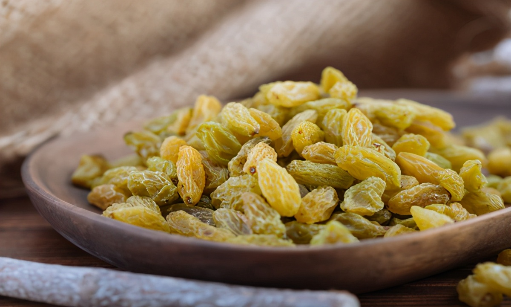

| 图片 | 特产种类 | 相关介绍 |
|---|---|---|
|  | 新疆葡萄干 | 新疆的葡萄干种类繁多，主要包括绿葡萄干、红葡萄干和黑葡萄干。新疆气候干燥、日照充足，适合葡萄的生长，使得葡萄干味道香甜，口感独特。其中，吐鲁番地区的绿葡萄干尤为著名，以其晶莹剔透、甜美多汁而闻名。 |
| 新疆哈密瓜 | 哈密瓜以其香甜多汁、肉质细腻而闻名。哈密瓜在新疆的哈密地区种植历史悠久，得益于当地的气候条件和土壤环境，使得哈密瓜风味独特，营养丰富。 | |
| 新疆核桃 | 新疆核桃以其壳薄、仁满、味美、营养丰富而受到消费者的喜爱。特别是阿克苏地区的核桃，以其优质的品质享誉全国。 | |
| 新疆羊肉 | 新疆羊肉由于当地羊群以天然牧草为食，肉质鲜嫩，味道纯正，无膻味。尤其是新疆的烤全羊、羊肉串和手抓饭等特色美食深受广大食客的喜爱 | |
| 和田玉 | 产于新疆和田地区，是中国四大名玉之一。其颜色丰富，有白、青、黄、黑、碧等，光泽柔和，质地温润细腻，杂质极少 ，具油脂光泽，不仅可作首饰装饰，还具养生保健功效。 | |
| 艾德莱斯绸 | 维吾尔族妇女喜爱的丝绸料，色彩绚丽、鲜艳，用色反差大，图案结构细腻，质地柔软，富于弹性，具民族文化特色 。 |